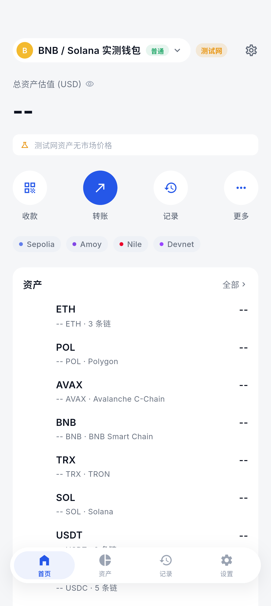
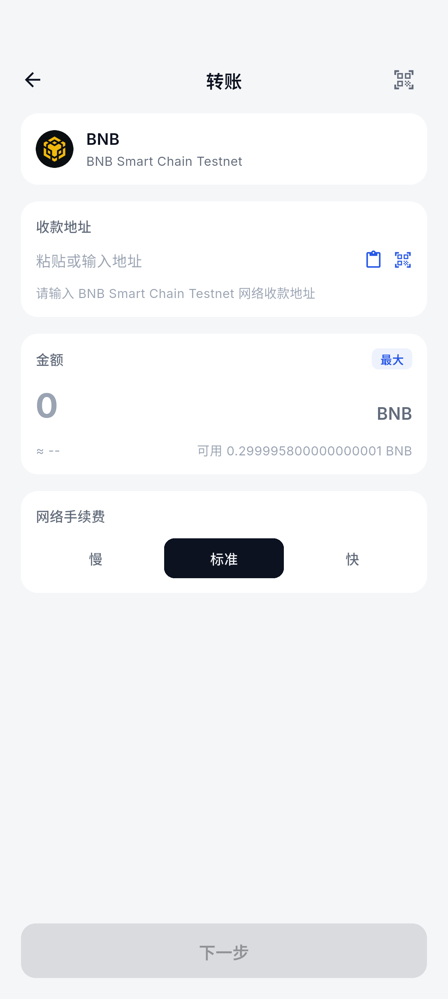
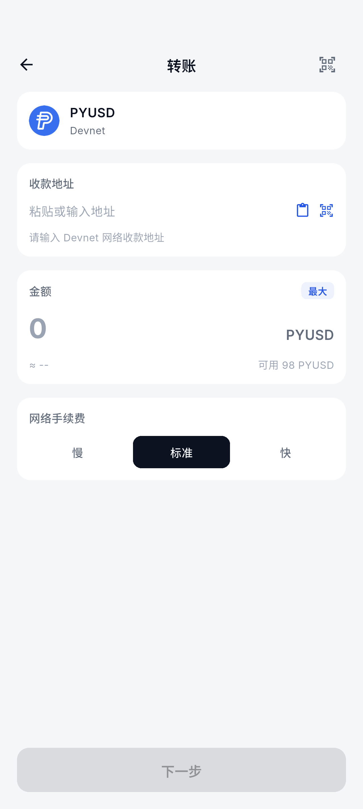
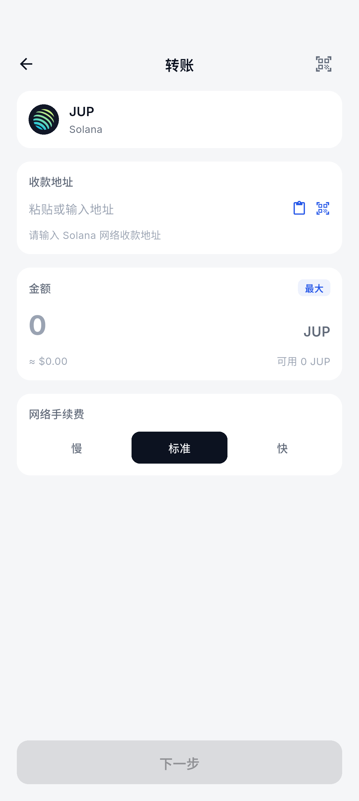
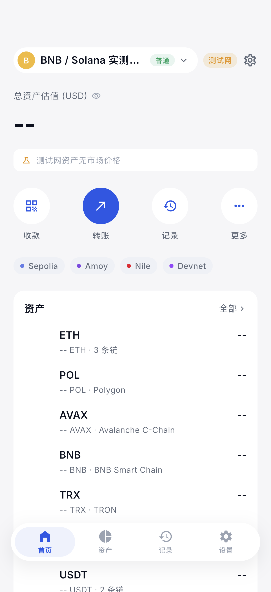
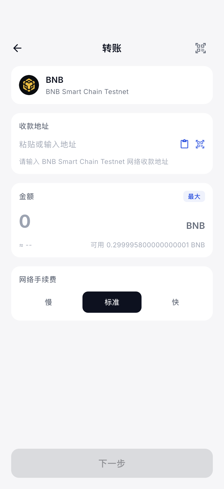
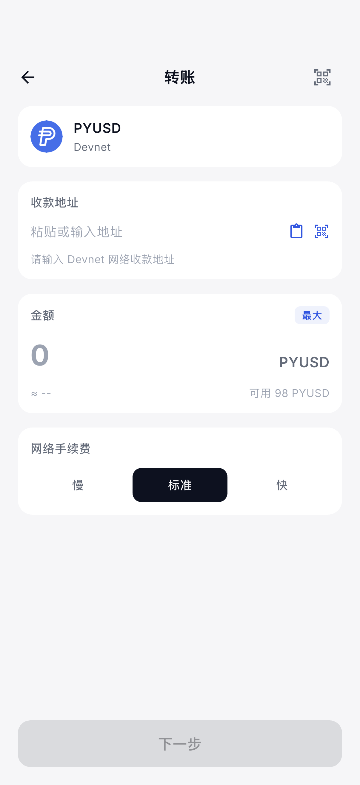
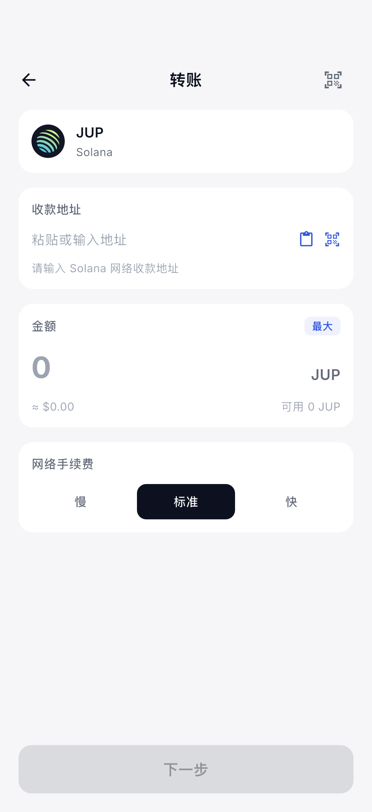

BAndroid · BNB Testnet
confirmed
交易：0x50c997fcd80c85b9a8caabc34e5d45367a7442d1cfb6faf49fd7957f2069e7b5
Block：121693297 · Nonce：0 · Status：1
Value：0.00001 tBNB · Gas：21,000 · 实付手续费：0.0000021 tBNB
KT Wallet 在 Android 15 / API 35 与 iOS 26.2 Simulator 上的真实原生签名、链上广播、Token-2022 ATA 首次创建，以及 PYUSD / Jupiter 生产 UI 验证。
| 平台 | BNB Testnet | PYUSD / Solana Devnet | Jupiter |
|---|---|---|---|
| Android 15 / API 35 | 真实通过 0.00001 tBNB 自转账；原生签名、广播、receipt status 1。 |
真实通过 1 PYUSD，Token-2022 ATA 首次创建，链上 confirmed。 |
身份与 ATA 通过 官方主网 mint、legacy SPL 所有者与 ATA 派生通过。 |
| iOS 26.2 Simulator | 真实通过 0.00001 tBNB 自转账；Face ID、原生签名、广播、receipt status 1。 |
真实通过 1 PYUSD，独立 Token-2022 ATA 首次创建，链上 confirmed。 |
身份与 ATA 通过 生产页面可打开；不使用假的 Devnet JUP。 |
confirmed
交易：0x50c997fcd80c85b9a8caabc34e5d45367a7442d1cfb6faf49fd7957f2069e7b5
Block：121693297 · Nonce：0 · Status：1
Value：0.00001 tBNB · Gas：21,000 · 实付手续费：0.0000021 tBNB
confirmed
交易：0xa1ea2bb8f2e539e60fd268834ec726205ca9a0357a5b2f0f34e3396ad1fc2675
Block：121694248 · Nonce：1 · Status：1
Value：0.00001 tBNB · Gas：21,000 · 实付手续费：0.0000021 tBNB
confirmed
交易：2mz8v3mNYeLsoALukjUyuXDEwSBxFaKQBEnFSthCGHmnE6gFuCdwG99L7jiCrXNrzF43uhQT51REVQdAYD3pY4EW
Slot：479394734 · Fee：5,000 lamports · Error：null
新 ATA：5gu5hFqJMiwBtCoSajahuD2y2HXEQwMT95d89ae5PfYm
前置：ATA 不存在 → 后置：raw amount 1,000,000 / decimals 6，即 1 PYUSD
confirmed
交易：3guk7VKo8VhRaXvcRuh2s6yD2nxbWwDLvNpj9sriDYK6JtAGPa4xQr7QDAoA1MyHFtjML4Nn94HQkVcZxbSKRx8p
Slot：479395456 · Fee：5,000 lamports · Error：null
新 ATA：CD2D9eXHts8TLFYJyGpRP7kydKP4diujq4nAVKP6WNBa
前置：ATA 不存在 → 后置：raw amount 1,000,000 / decimals 6，即 1 PYUSD
| 能力 | 实现 | 验证 |
|---|---|---|
| BNB Smart Chain Testnet | BNB 地址派生、chainId 97、真实余额、EIP-1559 签名发送、0.1 Gwei 验证者最低 tip 保护、receipt 状态轮询、Gateway 网络与历史路由。 | 双端真实交易通过 |
| PYUSD Devnet | 官方测试 mint CXk2…UynM；Token-2022 program；收款方 ATA 缺失时把 ATA 创建指令和 Token 转账打包为同一笔交易。 | 双端真实交易通过 |
| JUP Mainnet | 官方 mint JUPyi…DvCN；legacy SPL Token program；生产 token catalog、Gateway 搜索/蓝勾数据与 ATA 派生。 | 链上只读 + 单测通过 |
| Gateway | https://gateway.kt-wallet.com 已部署 v1.7.0，支持 bnb-mainnet、bnb-testnet、sol-mainnet、sol-devnet。 | 健康检查与真实余额通过 |
JUP 没有用于本次验收的官方 Devnet 资产，因此没有制造同名假币来伪装“测试成功”。本次只读取主网官方账户所有者、验证官方 mint 和派生 ATA，并用生产发送路径的单元测试覆盖 legacy SPL 首次收款 ATA。没有动用主网资金。

真实 EVM、TRON、Solana 余额已聚合；BNB Testnet 余额已到账。

官方 BNB 图标与真实可用余额 0.299995800000000001 BNB。

真实可用余额 98 PYUSD；发送实现支持 Token-2022 ATA 首次创建。

官方主网 JUP 生产转账页面。

钱包名长文本已修复，不再挤压测试网与设置入口。

官方 BNB 图标与真实可用余额 0.299995800000000001 BNB。

真实可用余额 98 PYUSD；iOS 原生 Wallet Core 签名已实发 1 PYUSD。

官方主网 JUP 生产转账页面；本轮仅做只读链上验真。
flutter analyze：新增 E2E、UI 截图、ATA 单测和首页修复均无问题。chain_params_service_test.dart：12/12 通过，包含 BNB 验证者 0.1 Gwei 最低 tip 回归测试。solana_token_transfer_test.dart：PYUSD Token-2022 与 JUP legacy SPL 两项通过。go vet、go test、race test 均通过并部署。0xb787f3c2f96403b5a73dc66de68e4a6395d4e632。